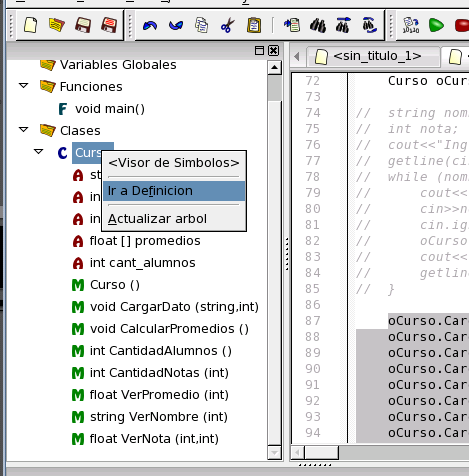

A continuación presione F2 para desplegar el árbol de símbolos. Este árbol permite explorar las clases, funciones, macros y variables globales declaradas en su programa/proyecto. Puede hacer click con el botón derecho del ratón sobre alguna de ellas para ir directamente a su declaración o definición.

Despligue la clase "Curso" haciendo click sobre el + a su izquierda, y observe cómo un código de letras identifica a los métodos (M) y los atributos (A) y un código de colores identifica su visibilidad (rojo=privado, amarillo=protegido, verde=publico).
Volver... Continuar...